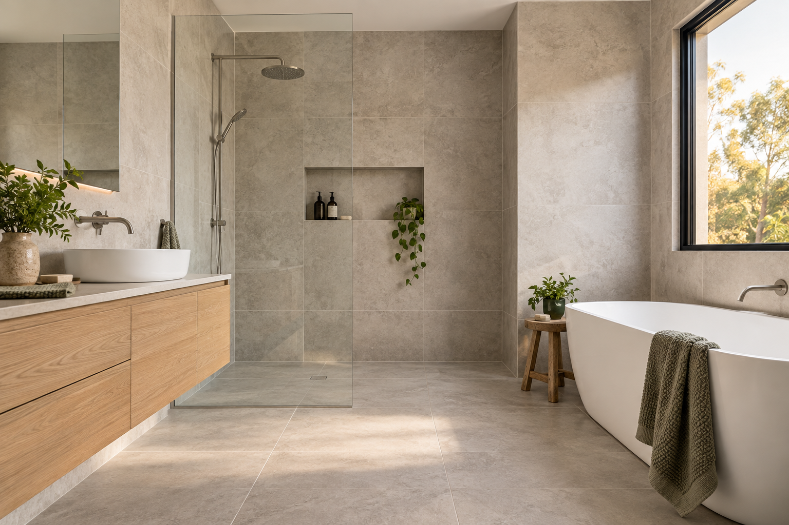

Bathroom waterproofing Adelaide
Bathroom waterproofing services before the tiled finish.
Ellis Services Group provides bathroom waterproofing services for shower areas, wet areas and bathroom surfaces. Send the layout, current surface condition and required tile finish in your enquiry.

Start with the bathroom layout and project stage
Every bathroom project is at a different point. Some rooms are being renovated from the substrate, while others have existing finishes that need to be assessed before the next step is clear. Tell us which parts of the bathroom are involved, whether a shower or other wet area is included, and what work has already been completed.
This focused page is for bathroom projects. For a wider overview of wet-area waterproofing services, see our waterproofing Adelaide information. For finished wall or floor surfaces, see our tiling services.
For bathroom renovation waterproofing services, see our bathroom renovation service information.
Coordinate waterproofing and tiling in the right order
Waterproofing and tiling services work together in bathroom renovations. Include the tile type, approximate area and condition of existing surfaces so we can respond to the requested work.
Questions to prepare for an enquiry
Before contacting us, note the room size, whether the bathroom is currently in use, the location of the shower and other wet areas, and whether the project is a renovation or a repair. Photos of the current space can help explain the situation. We use this information to respond to the bathroom waterproofing service requested.
Request bathroom waterproofing in Adelaide
Use our contact page to describe the bathroom, its current stage and the finish required. Ellis Services Group can then respond to your bathroom waterproofing enquiry in Adelaide.
CALL 0425 170 688